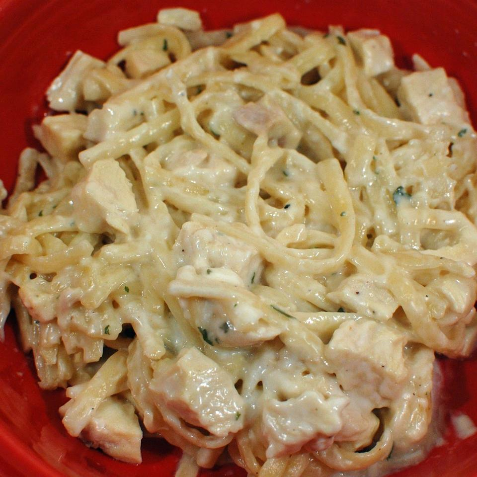

Chicken Alfredo

Description
Chicken Alfredo is one of those dishes I've always loved, and been able to do put together very well.
It's easy to go overboard trying to add extras to it, but just keeping things simple is a surefire way
to create a delicious and easy meal.
Ingredients:
- Some chicken, obviously. Preferably at least 2lbs of chicken breast, but any kind will do.
- Salt and pepper to taste.
- Your pasta of choice, though I prefer linguini or penne.
- Alfredo sauce. Store bought or your own, use as much or as little as you want.
- 2 tablespoons butter.
- A tiny spritz of lemon juice.
- A generous helping of garlic powder.
- A slightly less generous helping of onion powder.
- Basil, preferably fresh.
- Italian seasoning to taste.
- A small amount - say, a 1/2 teaspoon - of cayenne pepper.
- One medium sized onion, diced.
- A good number of garlic cloves, diced. You can never have too much.
- A couple cups, or more, of chopped broccoli.
- A couple cups of shredded parmesan cheese.
- (Optional) Add a diced carrot or two, and/or a bell pepper, for more vegetable goodness.
Steps:
- Chop the vegetables and set them aside. Shell and clean the garlic, but don't dice it yet.
- Dice the chiken into small chunks and season with salt, pepper, garlic and onions powders, and other seasonings.
- Heat some oil on medium-high heat (your choice, but pref. some light olive oil) in a large pan. Meanwhile, begin boiling a pot of water for the pasta. Add salt to the water if desired. Boil pasta per instructions when ready.
- In a smaller saucepan, bring a small amount of water to a boil and place a steamer insert into it. Then, place broccoli and other vegetables into it. Cover and steam until tender.
- Add diced onion to the heated oil, cooking until slightly translucent. Then add the chicken and cook until done, approx. 10 minutes. When it is nearly done, dice the garlic.
- When chicken is done, drain some of the juices if desired. Add diced garlic and cook until aromatic. Then add butter and lemon juice and cook on a lower heat until everything is combined.
- Add vegetables, alfredo sauce, and remaining seasonings. Simmer for a few minutes until mixture is hot. Taste and add more seasoning as desired.
- Serve mixture over cooked noodles in individual bowls immediately.
Notes:
- If you have room, you can optionally add the finished pasta to simmer in the sauce. This will enhance the flavor of the noodles, but is optional.
- You can skip most of the vegetables, but fresh garlic and onion are almost essential. The impact they have on the flavor cannot be understated.
- The quality of the sauce you use will also heavily impact the dish. There are nice jarred sauces out there, but they are pricy. Making your own is not hard, but can be time consuming. It should enhance the quality of the dish manyfold however, and you can customize it to your liking.
Return to Homepage